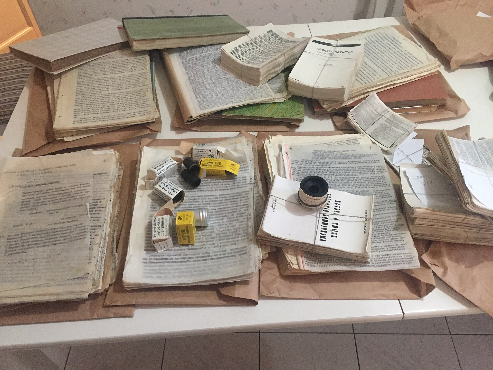
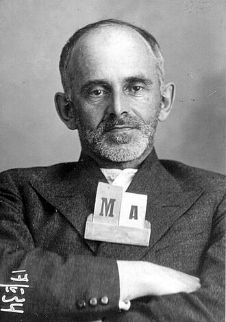

When the State owns every press, you don't get louder. You get slower, and more personal.
Debate this
"Some ideas are dangerous enough that banning them is the right call."
Goal of today
What you'll walk out with
Today you'll handle three ideas that change how you think about reach. First, samizdat, and the claim that the reader is the publisher. Second, slow media and trust networks, and why a message that can't go viral has its own kind of power. Third, the ethics of visibility: whose safety a post spends, and who agreed to spend it. You'll go deeper Thursday. Today we do it together, with a pen.

Samizdat: hand-copied, underground literature passed reader to reader in the USSR (Wikimedia Commons, CC BY-SA 4.0).
Feel it
The State owns every press, every copier, every typewriter that matters.
You've read something true. Owning a copy could cost you five years. How do you get it to a thousand people?
Here's what they did
Samizdat
Russian: sam (self) + izdat (publishing), so "self-published." The underground copying and hand-to-hand passing of banned texts in the USSR, roughly the 1950s through the 1980s.
Carbon copy
Stack thin paper with inky carbon sheets between, hit the keys hard, and one typing makes up to six copies at once. The whole "press" fits on a kitchen table.
One typing plus carbon paper makes about six copies at a strike.
6 readers → each retypes → 36 → 216 …
No headquarters to raid. The distribution system lives in people's kitchens and coat pockets. The reader is the publisher.

Osip Mandelstam, photographed after his 1934 arrest (Public domain, Wikimedia Commons).
Become the press
Copy the whole thing by hand.
Osip Mandelstam, "The Stalin Epigram" (1933), opening lines. Pen only. No going back to fix a slip. When you're done, hand your copy to the next person in your group to copy from yours.
We live, not feeling the country beneath us,
our speech inaudible ten steps away.
But where there's enough for half a conversation,
the Kremlin mountaineer is named.
His fingers are fat as grubs,
his words drop like lead weights, and never miss.
Compare the copies
Read the copies aloud, down the chain. What changed?
Line up the last copy against the original, and against your neighbor's.
What you just felt
It is slow, and it is work. That is why it stayed small.
Each copy drifts a little. That's the human carbon-copy fade, live.
You had to choose who got your copy. That choice is trust.
The slowness, the smallness, and the trust were not bugs in the system. They were the whole design.
Callback · Langdon Winner: artifacts have politics
What politics are built into a typewriter and a sheet of carbon paper?
Two weeks ago Winner argued that the design of a tool can quietly enforce power. Turn that lens on these two humble objects.
Here's the idea
A printing press is central, costly, and seizable. A typewriter with carbon paper is none of those. The tool's very limits, slow, by hand, a few copies at a time, forced the network to be decentralized, with no center to raid and no list to demand. The weakness became the security feature. Winner's point, poured into an object: the politics were built into the thing itself.
The turn
Before anyone is ever arrested, what does being watched do to people?
Samizdat existed because people were watched. You won't face the KGB, but your cause still lives under watchful systems: platforms that log everything, employers who search names, opponents who screenshot.
Name it · the chilling effect
After the 2013 revelations that the NSA was collecting bulk internet data, traffic to Wikipedia articles on terms like "car bomb" and "Al Qaeda" dropped measurably. Nobody was arrested for reading them. People simply stopped, because they felt watched.
Surveillance changes behavior without charging a soul.
Researchers call it the chilling effect. One survey (Penney) found a personal legal threat made about 75% of people say they'd speak less online. For a movement, the danger is that your most vulnerable members go quiet before you even ask them to speak.
Why is a network with no center harder to shut down than one big press?
A case · Moscow, 1968 to 1983
The Chronicle of Current Events was a samizdat newsletter that did one plain, dangerous thing: it documented Soviet arrests, trials, and abuses, dryly and accurately, for about fifteen years. Editors were arrested. The Chronicle kept coming.
Its secret was structural. There was no center to cut.
No subscriber list to seize, no single office to raid. Each issue told readers, in effect, "if you know of an arrest, pass the facts back up the same chain you got this from." Information traveled through trust, in both directions. The medium had no middle. That is the exact opposite of a contact list sitting on one shared link.
Workshop
Move a risky message without burning the person it's about.
Each group takes one situation, undocumented families at a schoola nurse blowing the whistle on unsafe staffingan abuse survivor's storyquiet union organizingprotest logistics and fills all four boxes. Pick a spokesperson to report back.
The message
What true thing has to reach people for this cause to move? Say it in one plain sentence.
The fast way
You post it publicly. What's the reach you gain, and exactly who does that post expose?
The slow way
You move it person to person through people who already trust each other. Sketch the chain: who tells whom?
The call
Which do you choose, and whose safety are you spending either way? What's the one rule you'd set before posting a real person?
Your cause · Field Notebook
Open your Field Notebook. Find the slow, high-trust core of your cause.
Work these on your own, then we'll hear a few.
Name the slow, high-trust core of your cause: the specific people who'd actually show up and do real work, beyond liking a post. How many are there, really?
Point to one place your cause exposes a person more than they chose to be, a tagged photo, a public list, a name on a post, and say what it could cost them.
Pick one thing you'll move off the public feed and into a smaller, higher-trust channel this semester. What does the private version protect that the public one couldn't?
Close
Whose safety am I spending, and did they agree to spend it?
Thursday's module: how samizdat actually held together, then the ethics you just bumped into, privacy, surveillance, and what you owe the people you put online. Bring the notebook. Project 1 is due this week.